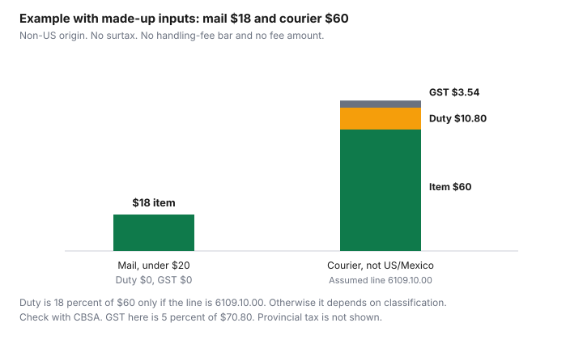

Clothing · Canada
Shein, Temu and Overseas Clothing Orders in Canada: Duty, Tax, Quality and Returns
Overseas clothing orders to Canada, from Shein, Temu or anyone outside the United States and Mexico, are duty- and tax-free at $20 and under. Above $20 duties and taxes apply, and Canada Post can add a $9.95 handling fee. Overseas-made clothing is not a U.S. surtax good. A low clothing price on an overseas site is the price before the border, the handling fee and the return you may not be able to afford. Shein and Temu are the names people search. The rules are not special to those names. They are the low-value shipment rules for goods that are not riding the higher courier bands from the United States or Mexico, plus the ordinary question of whether the garment is marked as a good of the United States. This page does not say how either platform collects tax at checkout. Check the order page, and check with the CBSA Border Information Service at 1-800-461-9999 or your carrier. The US clothing guide is the surtax page. Household goods that are not clothes are on the household counter-tariffs guide.
Key takeaways
- Mail, and courier from anywhere other than the United States or Mexico: $20 and under is duty- and tax-free. Above $20, duties and taxes apply to the shipment. Amounts are Canadian dollars of value for duty. Checked on CBSA’s low-value page, modified 25 November 2025, and in Memorandum D8-2-16, 15 November 2024.
- The surtax in the United States Surtax Order (2026) applies to US-origin goods, including under the de minimis thresholds. Overseas-made clothing is not a surtax good. A garment marked as made in the United States can be, even if the site is not American.
- Most-favoured-nation duty on the apparel lines listed in the US clothing guide is 18 percent, and 17 percent on 6211.32. Whether your shirt is one of those lines depends on classification: check with CBSA.
- Canada Post charges a handling fee of CAN$9.95 on a mail item that owes duty or tax, on the Canada Post page checked 29 Sep 2026. If the item is duty-free and tax-exempt, CBSA’s mail page says no amount is charged. The chart does not draw that fee.
- A checkout tax line is not a CBSA assessment. This page does not describe how a platform collects it. Quality checks are the fibre label, the size chart, the return address, and a recall search.
The $20 threshold for non-US/Mexico shipments
Value for duty is the figure the threshold uses. It is not always the number on a sale page in another currency.
CBSA’s low-value shipment page says a shipment imported by mail is duty- and tax-free at $20 and under from any country, and that above $20 duties and taxes apply from any country, including the United States and Mexico. A courier shipment from any country other than the United States and Mexico is duty- and tax-free up to $20 and owes duties and taxes above $20. Memorandum D8-2-16, paragraph 9, says that where the value exceeds the threshold, customs duties apply to the entire value, not only the slice above it. Paragraph 13 repeats the $20 remission for countries other than the United States and Mexico.
The higher courier bands are the comparison, not the default for an overseas warehouse. Courier from the United States or Mexico: up to $40 duty- and tax-free, above $40 to $150 duty-free but taxes apply, above $150 duties and taxes apply. Goods do not need to originate in a CUSMA country to use those bands. They must be shipped from the United States or Mexico after they entered that country’s commerce. Goods only transshipped through the United States stay at $20. Paragraph 8 says you cannot split one order into several parcels to duck the threshold. Alcohol, cannabis, vaping products, tobacco and some publications are outside the remission. The $40 and $150 bands are not a surtax exemption. Customs Notice 26-23, paragraph 9, says the surtax applies to US-origin goods including shipments under the de minimis thresholds.
| How it arrives | Value for duty | Ordinary duty and tax | Surtax |
|---|---|---|---|
| Mail, any country | $20 and under | Duty- and tax-free, with exceptions such as alcohol, tobacco and some publications | Still applies if the goods are US-origin. Paragraph 9. |
| Mail, any country | Above $20 | Duties and taxes apply, including from the US and Mexico | Applies if the goods are US-origin |
| Courier, not from the US or Mexico | Up to $20 | Duty- and tax-free, same exceptions | Applies if the goods are US-origin, and the goods must be accounted for |
| Courier, not from the US or Mexico | Above $20 | Duties and taxes on the entire value | Applies if the goods are US-origin |
| Courier from the US or Mexico, for comparison | Up to $40; above $40 to $150; above $150 | Duty- and tax-free; then duty-free but taxed; then both | Not an exemption. Goods only transshipped through the US stay at $20. |
How platforms collect GST/HST at checkout
A line on a checkout can say tax, GST or “import fee.” That line is the platform’s sentence. It is not, by itself, CBSA’s assessment, and this page does not state how Shein, Temu or any other platform calculates it.
Open the order page and read the lines before you pay. Then compare them with the threshold above. A prepaid tax line that does not mention duty, surtax or a handling fee has not answered those questions.
GST in CBSA’s own surtax examples is 5 percent of the value for tax. Provincial sales tax can also apply. Canada Post’s customs page says CBSA collects PST or HST according to the province of residence on most taxable mail imports valued at over CAN$20. The chart below uses 5 percent GST only, and it says so. Paragraph 17 of Customs Notice 26-23 says GST is calculated on a value for tax that includes the surtax even when customs duty is remitted, and that GST is not payable on a non-taxable importation even if surtax applies. An overseas-made order under $20 by mail is in the remission: no ordinary duty and no ordinary tax. It is not a surtax case unless the goods are marked as US goods. How a courier collects the surtax on a small personal order, and whether a brokerage fee is added, is check with CBSA or your carrier. Do not treat a forum’s fee as a rate.
Sizing, quality and return reality
The return is the part the low price hides. You need a return address you can actually use, a statement of who pays the postage, and a fibre label you can read before the parcel exists.
The Competition Bureau’s “Labelling textile requirements in a nutshell” page says the dealer, meaning the manufacturer, importer or retailer responsible, has to put a label on a consumer textile article. A fibre at 5 percent or more of the mass is named with its percentage, in English and French. The dealer is named with a postal address or a CA identification number. Dealer identity and country of origin, when required, do not have to be bilingual. A permanent label has to stay legible through 10 cleanings on items such as pants and shirts. Hosiery, gloves, sleepwear and underwear may use a non-permanent tag. A listing that says “soft fabric” and never names a fibre is not that label. Quebec has additional language rules. The Bureau points those to the Office québécois de la langue française.
Size charts on these sites are not a Canadian standard. Measure a garment that fits and compare those centimetres with the chart. If the chart is missing, skip the order. The shipping and return-fee guide is the domestic version of the same arithmetic. An overseas return can cost more than a domestic $3.99 warehouse fee, and the seller’s page is the only place that number lives. The return-policy guide does not bind a foreign seller. Ontario’s lack of a general return right is about businesses under that Act. A foreign checkout still needs its own return sentence before you pay.
| Check | What you are looking for | Rule |
|---|---|---|
| Fibre content and care label | Generic fibre names and percentages, in English and French, for fibres at 5 percent or more | Competition Bureau textile labelling page. Care symbols are explained by the Office of Consumer Affairs. The care-labelling standard was withdrawn in October 2017. Follow the label in the garment. |
| Size chart | Centimetres you can compare with a garment you own | No national size. If the chart is missing, do not guess. |
| Return address and who pays | A return address and a sentence about postage | The seller’s terms. A store refund is not a duty refund. Eligibility for a CBSA adjustment is check with CBSA. |
| Seller identity | A name and an address, or a CA number on the article once it arrives | Textile labelling: dealer identity on the label. A brand name alone is not the postal address. |
Product safety recalls and flagged items
Search the product and the seller on recalls-rappels.canada.ca before you pay. The public list, checked 29 Sep 2026, is the Government of Canada’s recall and advisory search.
A recall can be a flammability failure, a drawstring, a chemical, or a small part. This guide gives no list of flagged garments. If a result matches what you are about to buy, do not buy it. The make-clothes-last guide is what you do after a garment you trust arrives. It is not a reason to skip the search.
When overseas really is cheaper
Compare the landed stack with a Canadian price for the same fibre and a size you can return locally. On a non-US-origin shirt over $20 by courier, most-favoured-nation duty may apply to the whole value if the line carries a duty rate.
Chapter 61, checked 29 Sep 2026, prints 18 percent most-favoured-nation on 6109.10.00, 6110.20.00 and 6110.30.00, and UST Free on those lines. The US clothing guide’s table prints 17 percent on 6211.32. Use 18 percent only when you are treating the parcel as one of those lines. If you are not sure of the line, the duty is “depends on classification,” and the GST base moves with it. Under $20 by mail, ordinary duty and tax are remitted, subject to the exceptions, and there is still no surtax unless the goods are US-origin.
Example with made-up inputs. One order is $18 by mail. It is under $20, so this example shows no duty and no GST, and it assumes the goods are not alcohol, tobacco or another exception, and are not marked as US goods. The other order is $60 by courier from a country other than the United States or Mexico, treated as tariff item 6109.10.00, cotton knitted T-shirts, most-favoured-nation 18 percent. Duty is $10.80. Value for tax is $70.80. GST at 5 percent is $3.54. Surtax is $0 because the example is not US-origin. Classification is assumed so the arithmetic can use a published rate. Check with CBSA before you treat a real parcel as 6109.10.00. Canada Post’s $9.95 handling fee applies when mail owes duty or tax. The $18 mail example does not owe duty or tax, so that fee is not part of it. The $60 example is a courier order, not a mail item, so the Canada Post fee is not part of it either. The chart draws no bar for a handling fee and states no amount for one. Brokerage on the courier is check with the carrier. The brokerage guide separates government charges from carrier charges.
| Example with made-up inputs | Item value | Duty | GST at 5 percent |
|---|---|---|---|
| Mail, under $20 | $18.00 | $0. The $20 mail remission. Not a US-origin example. | $0 |
| Courier, not from the US or Mexico | $60.00 | $10.80 if the line is 6109.10.00 at 18 percent. If the line is different, duty depends on classification. Check with CBSA. | $3.54 on $70.80 if duty is $10.80. If duty is unknown, GST is unknown too. |

Sources & date stamps
- CBSA, low-value shipment thresholds, dcterms.modified 2025-11-25, checked 29 Sep 2026. Mail $20. Courier from other countries $20. Courier from the US or Mexico: $40 and $150.
- CBSA Memorandum D8-2-16, Courier Imports Remission, Ottawa, 15 November 2024, checked 29 Sep 2026. Paragraphs 3, 4, 8, 9, 11 to 13.
- CBSA Customs Notice 26-23, Ottawa, 7 September 2026, checked 29 Sep 2026. Paragraphs 5, 6, 9, 14, 15, 17 and 29. Example 2 is on the US clothing guide. Border Information Service 1-800-461-9999.
- Justice Laws, United States Surtax Order (2026), SOR/2026-186, is the Order the notice applies. In force 8 September 2026. Apparel on Schedule 3 is listed in the US clothing guide. The list covers specific lines, not all clothing.
- CBSA, 2026 Customs Tariff, chapter 61, checked 29 Sep 2026. Tariff items 6109.10.00, 6110.20.00 and 6110.30.00 each print 18 percent most-favoured-nation and UST Free. The 17 percent rate on 6211.32 is the rate in the US clothing guide’s dated table. Confirm the line with CBSA.
- CBSA, Importing by mail, checked 29 Sep 2026. Form E14. Canada Post handling fee when duty or tax is owed. None if duty-free and tax-exempt.
- Canada Post, Customs duty, taxes, and exemptions, checked 29 Sep 2026. Handling fee CAN$9.95 per dutiable or taxable mail item. Not drawn on the chart.
- CBSA, Determining duty and taxes owed, checked 29 Sep 2026. Gift rule is a different test. A business shipment is not a gift.
- CBSA, Request a refund or adjustment of duties and taxes paid, modified 5 January 2026, checked 29 Sep 2026. Personal use. Eligibility of a specific return: check with CBSA.
- Competition Bureau, Labelling textile requirements in a nutshell, checked 29 Sep 2026.
- Health Canada recalls search, recalls-rappels.canada.ca/en, checked 29 Sep 2026.
Frequently asked questions
Do I pay duty on Shein or Temu orders in Canada?
Often, once the shipment is over the low-value threshold, and the answer depends on mail versus courier and on the value for duty in Canadian dollars. By mail, $20 and under is duty- and tax-free from any country. Above $20, duties and taxes apply. By courier from a country other than the United States or Mexico, the same $20 line applies. Above it, duties and taxes apply to the whole shipment, not only the portion over $20. The rate depends on classification. Chapter 61 of the 2026 Customs Tariff, checked 29 Sep 2026, prints 18 percent most-favoured-nation, and UST Free, on 6109.10.00. The US clothing guide’s table prints 17 percent on 6211.32. Whether your parcel is one of those lines is check with CBSA. Check the order page for any tax the platform already collected, and check with CBSA at 1-800-461-9999 or your carrier before you treat the checkout as the full bill.
Does the counter-tariff surtax apply to these orders?
Not because the website is overseas. Customs Notice 26-23 says the surtax applies only to goods that originate in the United States, meaning goods eligible to be marked as goods of the United States. For a personal import, that is when they are marked as a good of the United States, even if they ship from another country. Clothing made elsewhere is not subject to the surtax. A Shein or Temu order of overseas-made clothes is in that category. Ordinary duty and tax can still apply. If a garment is marked as a good of the United States, the surtax can apply even on a small shipment. The list covers specific tariff lines, not all clothing. Classification is check with CBSA.
What is the $20 threshold?
It is a Canadian-dollar value for duty, not a sale price in another currency. CBSA’s low-value page, modified 25 November 2025, says mail at $20 and under is duty- and tax-free from any country, and above $20 duties and taxes apply, including from the United States and Mexico. Courier from any country other than the United States or Mexico uses the same $20 line. Courier from the United States or Mexico is a different scale: up to $40 duty- and tax-free, above $40 to $150 duty-free but taxed, above $150 both. Those higher bands are not a surtax exemption, and they are not the band for a parcel that only transshipped through the United States. Some goods, including alcohol, tobacco and some publications, are exceptions.
Who pays if I return an overseas order?
The seller’s terms decide the store refund and who pays postage back. They do not decide a refund of duty or tax. CBSA’s page on a refund or adjustment for goods for personal use, modified 5 January 2026, is the starting point. Whether your return qualifies is check with CBSA. If the parcel came by mail and Form E14 is attached, you can refuse it and ask for a reassessment, or pay and send Form B2G to a Casual Refund Centre. CBSA does not refund a broker’s fee or shipping and handling. Read the return address before you order. A return to an overseas warehouse can cost more than the garment.
How do I check quality before I order?
Read the fibre-content label the product page shows, and treat a missing label as a reason to wait. The Competition Bureau’s textile page says a fibre at 5 percent or more of the mass has to be named, in English and French, with the percentage, and the dealer has to be identified by name and address or a CA number. That is the Canadian rule for consumer textile articles. A marketplace listing that hides the fibre is not that label. Check the size chart against a garment you own, not against a memory. Search recalls-rappels.canada.ca for the product. Then read who pays return shipping.
Researched and drafted with AI assistance and fact-checked against official Canadian sources. How we create content.